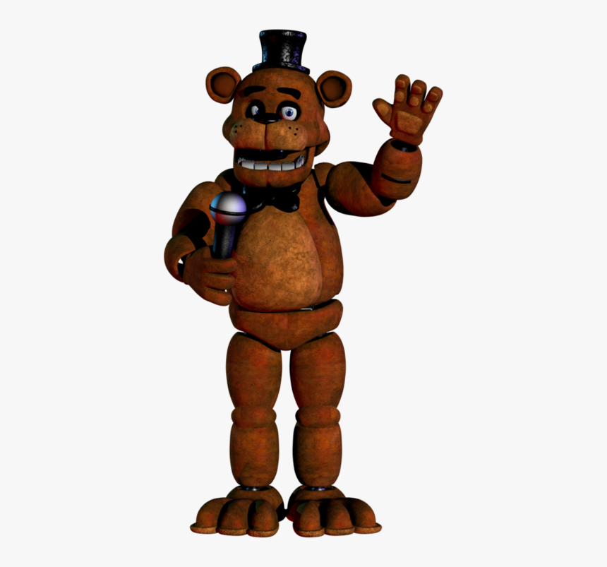
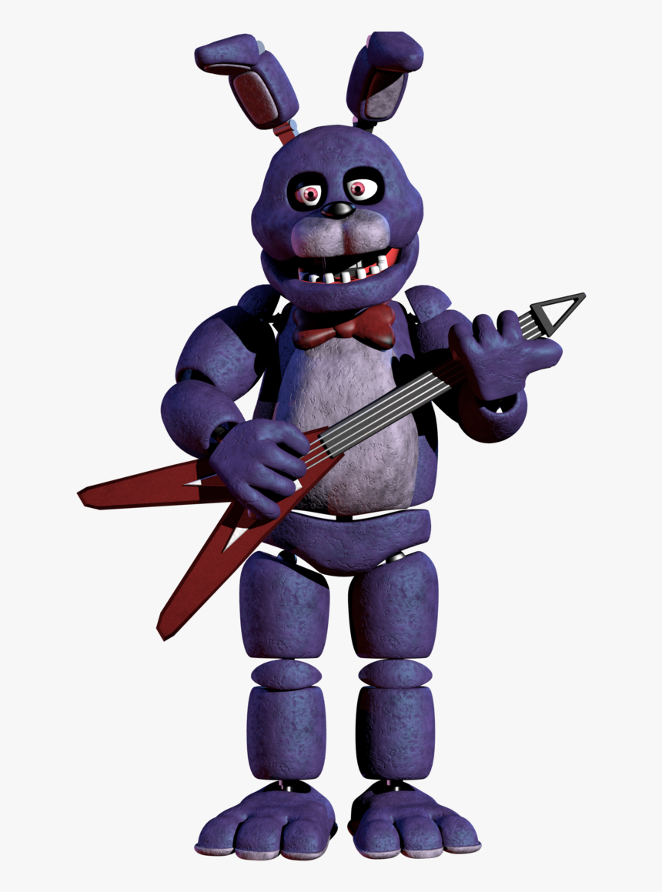
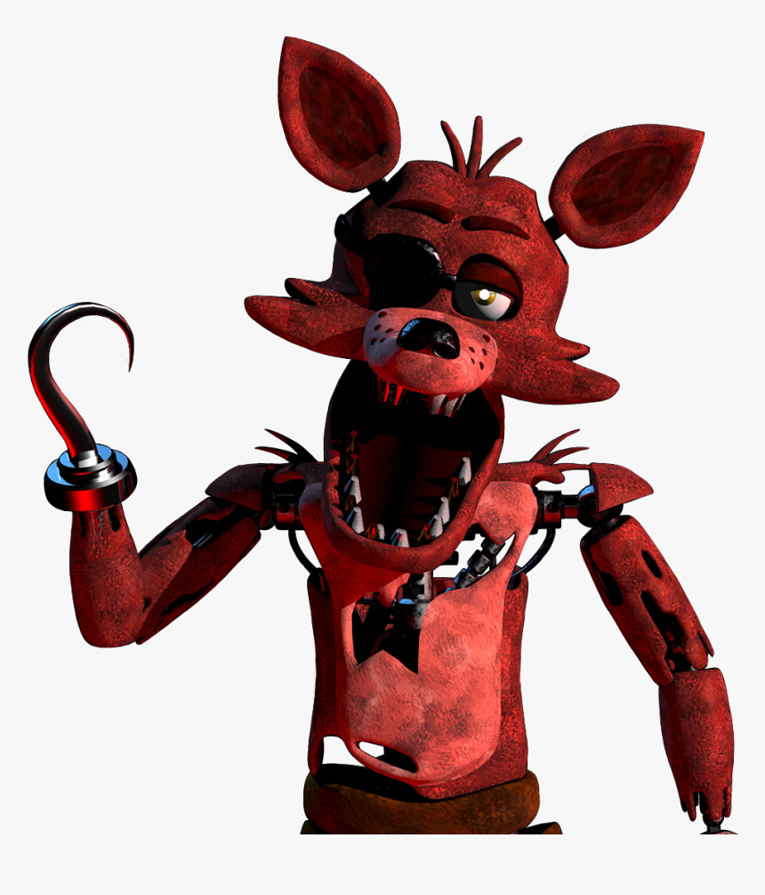
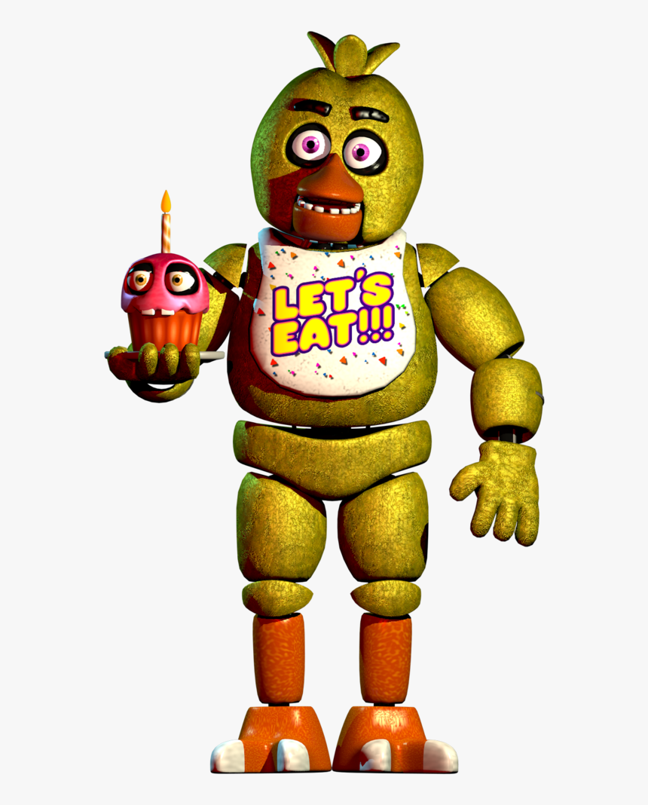

Five Nights at Freddy’s (FNAF) é um jogo de terror e sobrevivência criado por Scott Cawthon e lançado em 2014. O primeiro jogo da franquia se tornou um grande sucesso por causa de sua atmosfera assustadora, seus personagens marcantes e seus mistérios.
A história se passa na Freddy Fazbear’s Pizza, uma pizzaria infantil que possui animatrônicos responsáveis por divertir as crianças durante o dia. Os principais personagens são Freddy Fazbear, um urso marrom que é o mascote da pizzaria; Bonnie, um coelho roxo que toca guitarra; Chica, uma galinha amarela que carrega um cupcake; e Foxy, uma raposa pirata que fica escondida em Pirate Cove.
O jogador assume o papel de Mike Schmidt, um segurança noturno que precisa trabalhar durante cinco noites na pizzaria. Sua missão é sobreviver da meia-noite até as seis horas da manhã, enquanto os animatrônicos se movimentam pelo estabelecimento e tentam chegar ao escritório onde ele está. Para se proteger, o jogador precisa observar as câmeras de segurança, controlar as portas e usar as luzes dos corredores, tomando cuidado para não gastar toda a energia disponível.
Cada animatrônico possui um comportamento diferente. Bonnie e Chica costumam se aproximar pelos corredores laterais, Foxy corre em direção ao escritório quando não é observado adequadamente, e Freddy se torna uma ameaça ainda maior conforme as noites avançam. O jogador precisa prestar atenção em todos eles, pois um único erro pode resultar em um susto e no fim da partida.
Além do terror e dos famosos jumpscares, o primeiro FNAF ficou conhecido pelos seus segredos e mistérios. Mensagens escondidas, recortes de jornais e detalhes nos cenários sugerem que acontecimentos sombrios ocorreram na pizzaria. Essas pistas despertaram a curiosidade dos fãs e deram origem a diversas teorias sobre a história dos animatrônicos e o passado do estabelecimento.
Mesmo com gráficos relativamente simples, o jogo conquistou milhões de jogadores graças à tensão constante, aos sons assustadores e à sensação de nunca estar completamente seguro. O primeiro Five Nights at Freddy’s marcou a história dos jogos de terror independentes e deu início a uma franquia que continua popular até hoje.
| NOME | ANIMAL | APARÊNCIA |
|---|---|---|
| Freddy | Urso |  |
| Bonnie | Coelho |  |
| Foxy | Raposa |  |
| Chica | Galinha |  |
Explore alguns dos mistérios escondidos na Freddy Fazbear's Pizza.
Golden Freddy é um personagem raro que pode aparecer durante a partida, surpreendendo o jogador.
A mensagem aparece em determinadas situações e contribui para os mistérios que cercam o primeiro jogo.
As notícias encontradas no jogo revelam pistas sobre acontecimentos sombrios ligados à pizzaria.
Em determinadas telas, clicar no nariz do Freddy pode produzir um som de buzina.